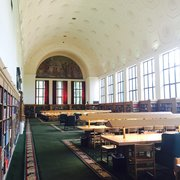

The University of Michigan campus in Ann Arbor spans around 3,070 acres, encompassing five main areas: Central Campus, East Campus, North Campus, Medical Campus, and South Campus. Here are some popular student study spots.
UM offers several amenities to meet the needs and preferences of students wanting to study in their preferred environment.
It can be easy to get lost in a big campus, reference the Campus Guide for additional assistance.
Michigan Union
Students studying in the Michigan Union
The Michigan Union is a popular study spot for students as it offers a variety of study environments. Additionally, the basement of the Michigan Union houses the Michigan Barnes & Noble Bookstore, and several food venues.
Hatcher Graduate Library Reference Room

Students studying in the Reference Room
The Hatcher Graduate Library offers a variety of study spots. The most popular of which is the Reference Room shown above. The Reference Room is open from 8am - 9pm and is has a traditionalist library element for students that prefer to study in silence alongside others. Areas that are more private are available to use in the top floors of the library.
Ross School of Business Davidson Winter Garden
Students studying in the Davidson Winter Garden
The Davidson Winter Garden is a section in the Ross School of Business where hundreds of students of different academic backgrounds study and conversate. The Winter Gardens are open from 7am - 6pm, and offer great study enviornments for collaborative learners.
Law Library Reading Room
Students studying in the Law Library Reading Room
The Law Library Reading Room is a popular study spot for law students and students of other academic backgrounds. The law library utlizes cork floors to increase the silence levels in the reading room. The Reading Room is open from 8am - 9pm and offers a quiet study environment for students that prefer to study in silence.